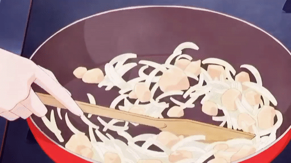

Receita de Farofa de Casca de Banana
Uma farofa inusitada e cheia de sabor, feita com cascas de banana.
Tempo de preparo
-
Total: 20 minutos
-
Preparo: 10 minutos
-
Cozimento: 10 minutos
Ingredientes
- Cascas de 4 bananas (bem lavadas)
- 1 cebola picada
- 2 dentes de alho picados
- 2 colheres de sopa de azeite de oliva
- 1 xícara de farinha de mandioca
- Sal e pimenta a gosto
- Cheiro-verde picado a gosto.
Modo de preparo
-
Corte em pedaços: Pique as cascas de banana em pequenos pedaços.
-
Refogue: Refogue a cebola e o alho no azeite até dourarem.
-
Adicione: Adicione as cascas de banana e refogue por 5 minutos.
-
Mexa bem: Acrescente a farinha de mandioca e mexa bem até tostar levemente.
-
Tempere: Tempere com sal, pimenta e cheiro-verde.